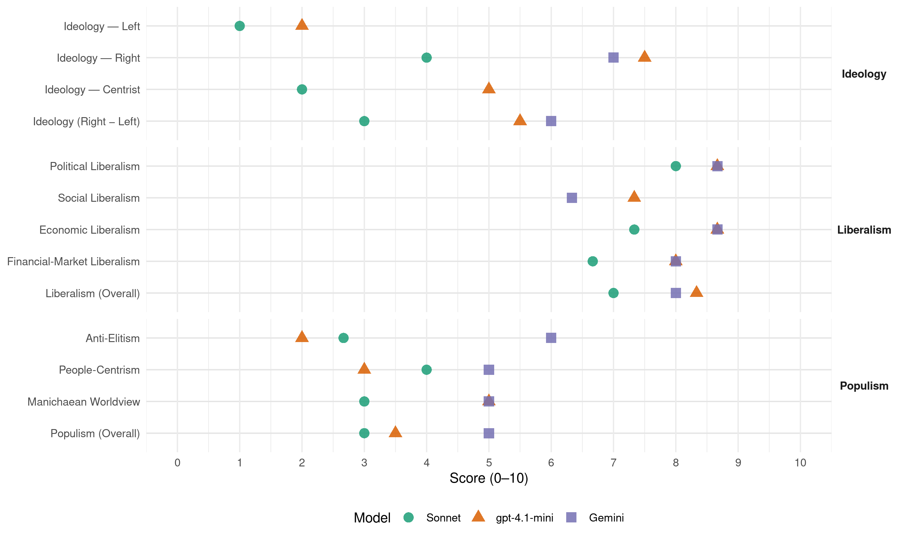

Republicans (United States, 2004)
manifesto_id 61620_200411
Get full text: This site shows derived annotations and short verbatim quotes only. The full manifesto text is © Manifesto Project / WZB — obtain it via manifesto-project.wzb.eu using the manifesto_id above.
Headline scores
| Dimension | Sonnet | gpt-4.1-mini | Gemini |
|---|---|---|---|
| Populism (Overall) | 3.0 | 3.5 | 5.0 |
| Anti-Elitism | 2.7 | 2.0 | 6.0 |
| People-Centrism | 4.0 | 3.0 | 5.0 |
| Manichaean Worldview | 3.0 | 5.0 | 5.0 |
| Ideology (Right − Left) | 3.0 | 5.5 | 6.0 |
| Liberalism (Overall) | 7.0 | 8.3 | 8.0 |
| Political Liberalism | 8.0 | 8.7 | 8.7 |
| Social Liberalism | – | 7.3 | 6.3 |
| Economic Liberalism | 7.3 | 8.7 | 8.7 |
| Financial-Market Liberalism | 6.7 | 8.0 | 8.0 |
Evidence per dimension
Economic Liberalism
Gemini · score 9.0 · verified · chunk 1
“free markets, and free trade”
hope of democracy, development, free markets, and free trade to every corner
Gemini · score 9.0 · verified · chunk 2
“economic freedom leads to national wealth”
reach its full potential. China has discovered that economic freedom leads to national wealth. China’s leaders will also discover that
Gemini · score 8.0 · verified · chunk 3
“safeguard private property rights”
President Bush and the Republican Congress will safeguard private property rights by enforcing the Takings
gpt-4.1-mini · score 9.0 · verified · chunk 1
“lower taxes, so Americans can keep more of their own hard-earned money”
President Bush worked with Congress to lower taxes, so Americans can keep more of their own hard-earned money to spend, save, or invest, thereby growing our economy and putting people back to work.
gpt-4.1-mini · score 9.0 · verified · chunk 2
“We must maintain our commitment to free and fair trade, lower taxes, limited regulation, and a limited, efficient government”
America’s economy is the strongest in the world, and it is getting stronger thanks to lower taxes, fewer burdensome regulations, and a focus on encouraging investment. Our goal is to make sure America remains the strongest economy in a dynamic world and to make it possible for every American who wants a job to find one. We must ensure that workers are equipped with the education and training to succeed in the best jobs of the 21st century, and we must encourage the strong spirit of innovation that has put America at the forefront of new technology industries. Future prosperity demands that we have affordable, cleaner, more independent energy supplies and affordable, high-quality health care. We must maintain our commitment to free and fair trade, lower taxes, limited regulation, and a limited, efficient government that keeps up with the new realities of a changing world.
gpt-4.1-mini · score 8.0 · verified · chunk 3
“Republican policies are working, such as the recently revitalized WTO Doha round negotiations that will create new opportunities for U.S. farmers and ranchers by cutting foreign tariffs”
The President put his words into action when he signed the 2002 Farm Bill, passed with strong support from Republicans in Congress. And President Bush continues to pursue and enforce international trade agreements that affect farmers and ranchers. Republican policies are working, such as the recently revitalized WTO Doha round negotiations that will create new opportunities for U.S. farmers and ranchers by cutting foreign tariffs, expanding quotas for American products, and eliminating agricultural export subsidies.
Sonnet · score 8.0 · verified · chunk 1
“free trade and free markets creates new jobs”
Economic growth supported by free trade and free markets creates new jobs and higher incomes. It allows people to lift their lives out of poverty
Sonnet · score 8.0 · verified · chunk 2
“free and fair trade”
We must maintain our commitment to free and fair trade, lower taxes, limited regulation, and a limited, efficient government
Sonnet · score 6.0 · verified · chunk 3
“market-based voluntary transfers through water banks”
we support efforts by the Administration to work with states and local communities in the West to expand the use of proven tools like market-based voluntary transfers through water banks
Financial-Market Liberalism
Gemini · score 8.0 · verified · chunk 1
“broaden capital markets”
strengthen and broaden capital markets on the continent.
Gemini · score 8.0 · verified · chunk 2
“save and invest in private markets”
Increasing Saving More than half of all Americans save and invest in private markets. We want even more people to build
gpt-4.1-mini · score 8.0 · verified · chunk 1
“record-level U.S. and multilateral resources devoted to the Nunn-Lugar programs”
We hail the commitment of the other G-8 nations (the United Kingdom, Japan, Italy, Canada, Germany, France, and Russia) to this vital initiative, as well as commitments by other countries, including Poland, Finland, Norway, Sweden, Switzerland, and Australia. Republicans applaud the support of more than 60 nations in this crucial multilateral effort to stop the trade in weapons of mass destruction and their related components.
gpt-4.1-mini · score 8.0 · verified · chunk 2
“President Bush signed the Sarbanes-Oxley Act, the most farreaching reform of American business practices since the 1940s”
After fraudulent corporate practices rooted in the irrational exuberance of the late 1990s began to surface in the closing months of 2001, President Bush worked with the Congress to take decisive action to restore honesty and integrity to America’s corporate boardrooms. In July 2002, President Bush signed the Sarbanes-Oxley Act, the most farreaching reform of American business practices since the 1940s. Under this new law, CEOs and Chief Financial Officers are required to personally vouch for the truth and fairness of their companies’ disclosures; for the first time, an independent board has been established to oversee the accounting profession; investigators have been given new tools to root out corporate fraud; and enhanced penalties are ensuring that dishonest corporate officials do hard time.
Sonnet · score 7.0 · verified · chunk 1
“strengthen and broaden capital markets”
We also applaud the efforts of the Bush Administration to strengthen and broaden capital markets on the continent. With the ability to borrow money to buy homes and to start businesses
Sonnet · score 7.0 · verified · chunk 2
“power of market principles and the WTO’s requirements”
The power of market principles and the WTO’s requirements for transparency and accountability have bolstered openness and the rule of law in China.
Sonnet · score 6.0 · verified · chunk 3
“Fair and Accurate Credit Transactions Act”
We praise President Bush and Republicans in Congress for passing the Fair and Accurate Credit Transactions Act, which established a national system of fraud detection so that identity thieves can be stopped
Political Liberalism
Gemini · score 9.0 · verified · chunk 1
“power of democracy”
example of the power of democracy. The President’s leadership
Gemini · score 9.0 · verified · chunk 2
“bolstered openness and the rule of law”
requirements for transparency and accountability have bolstered openness and the rule of law in China. Republicans support the commitment
Gemini · score 8.0 · verified · chunk 3
“restore the separation of powers”
working with a Republican president, will restore the separation of powers and re-establish a government
gpt-4.1-mini · score 9.0 · verified · chunk 1
“freedom and opportunity for all”
Republicans have always been the Party of fresh ideas and new thinking. We encourage debate on the major issues of our day, and we will consistently act in accord with the greatest values of our country - freedom and opportunity for all.
gpt-4.1-mini · score 9.0 · verified · chunk 2
“the power of market principles and the WTO’s requirements for transparency and accountability have bolstered openness and the rule of law in China”
Our important bilateral trade relationship has benefited from China’s entry into the World Trade Organization, creating export opportunities and jobs for American farmers, workers, and companies. The power of market principles and the WTO’s requirements for transparency and accountability have bolstered openness and the rule of law in China. Republicans support the commitment of President Bush and Republicans in Congress to ensure that China fulfills its WTO obligations.
gpt-4.1-mini · score 8.0 · verified · chunk 3
“President Bush has established a solid record of nominating only judges who have demonstrated respect for the Constitution and the democratic processes of our republic”
President Bush has established a solid record of nominating only judges who have demonstrated respect for the Constitution and the democratic processes of our republic, and Republicans in the Senate have strongly supported those nominees. We call upon obstructionist Democrats in the Senate to abandon their unprecedented and highly irresponsible filibuster of President Bush’s highly qualified judicial nominees, and to allow the Republican Party to restore respect for the law to America’s courts.
Sonnet · score 8.0 · verified · chunk 1
“democracy flourishes in the world”
Our plans focus on ensuring that America remains safe, terrorists are defeated, and democracy flourishes in the world … on expanding opportunities for ownership
Sonnet · score 8.0 · verified · chunk 2
“freedom and democracy are universal”
Republicans share with her the view that the basic principles of human freedom and dignity are universal. We are committed to working with our allies
Sonnet · score 5.0 · mixed · chunk 3
“limit federal court jurisdiction”
such as using Article III of the Constitution to limit federal court jurisdiction; for example, in instances where judges are abusing their power by banning the use of ‘under God’
Liberalism (Overall)
Gemini · score 9.0 · verified · chunk 1
“free markets, and free trade”
hope of democracy, development, free markets, and free trade to every corner
Gemini · score 9.0 · verified · chunk 2
“economic freedom leads to national wealth”
reach its full potential. China has discovered that economic freedom leads to national wealth. China’s leaders will also discover that
Gemini · score 6.0 · verified · chunk 3
“safeguard private property rights”
President Bush and the Republican Congress will safeguard private property rights by enforcing the Takings
gpt-4.1-mini · score 8.0 · verified · chunk 1
“freedom and opportunity for all”
Republicans have always been the Party of fresh ideas and new thinking. We encourage debate on the major issues of our day, and we will consistently act in accord with the greatest values of our country - freedom and opportunity for all.
gpt-4.1-mini · score 9.0 · verified · chunk 2
“We must maintain our commitment to free and fair trade, lower taxes, limited regulation, and a limited, efficient government”
America’s economy is the strongest in the world, and it is getting stronger thanks to lower taxes, fewer burdensome regulations, and a focus on encouraging investment. Our goal is to make sure America remains the strongest economy in a dynamic world and to make it possible for every American who wants a job to find one. We must ensure that workers are equipped with the education and training to succeed in the best jobs of the 21st century, and we must encourage the strong spirit of innovation that has put America at the forefront of new technology industries. Future prosperity demands that we have affordable, cleaner, more independent energy supplies and affordable, high-quality health care. We must maintain our commitment to free and fair trade, lower taxes, limited regulation, and a limited, efficient government that keeps up with the new realities of a changing world.
gpt-4.1-mini · score 8.0 · verified · chunk 3
“Republican policies are working, such as the recently revitalized WTO Doha round negotiations that will create new opportunities for U.S. farmers and ranchers by cutting foreign tariffs”
The President put his words into action when he signed the 2002 Farm Bill, passed with strong support from Republicans in Congress. And President Bush continues to pursue and enforce international trade agreements that affect farmers and ranchers. Republican policies are working, such as the recently revitalized WTO Doha round negotiations that will create new opportunities for U.S. farmers and ranchers by cutting foreign tariffs, expanding quotas for American products, and eliminating agricultural export subsidies.
Sonnet · score 7.0 · verified · chunk 1
“free markets, and free trade to every corner”
actively working to bring the hope of democracy, development, free markets, and free trade to every corner of the world
Sonnet · score 7.0 · verified · chunk 2
“free markets, free speech, and free labor unions”
focusing its new work on bringing free elections, free markets, free speech, and free labor unions to the Middle East.
Sonnet · score 5.0 · mixed · chunk 3
“market-based policies in Clear Skies”
The market-based policies in Clear Skies, along with a 90 percent cut in pollution from diesel vehicles, will help states meet new, more stringent standards
Anti-Elitism
Gemini · score 6.0 · verified · chunk 3
“self-proclaimed supremacy of these judicial activists”
We believe that the self-proclaimed supremacy of these judicial activists is antithetical to the democratic
gpt-4.1-mini · score 2.0 · verified · chunk 1
“We condemn inconsistent, ambiguous, and politically expedient statements”
Their mission is difficult enough. Uncertainty about America’s commitment to that mission makes it immeasurably more difficult. We condemn inconsistent, ambiguous, and politically expedient statements on that point.
gpt-4.1-mini · score 2.0 · verified · chunk 3
“obstructionist Democrats in the Senate to abandon their unprecedented and highly irresponsible filibuster”
President Bush has established a solid record of nominating only judges who have demonstrated respect for the Constitution and the democratic processes of our republic, and Republicans in the Senate have strongly supported those nominees. We call upon obstructionist Democrats in the Senate to abandon their unprecedented and highly irresponsible filibuster of President Bush’s highly qualified judicial nominees, and to allow the Republican Party to restore respect for the law to America’s courts.
Sonnet · score 2.0 · verified · chunk 1
“coalition of the coerced and the bribed”
nominating a candidate who has insulted our allies by calling the nations fighting in Iraq ‘window-dressing’ and referring to them as a ‘coalition of the coerced and the bribed’
Sonnet · score 3.0 · verified · chunk 2
“trial lawyers are the brakes”
If small business is America’s economic engine, trial lawyers are the brakes: They cost hundreds of thousands of good jobs
Sonnet · score 3.0 · verified · chunk 3
“activist judges are redefining the institution of marriage”
In some states, activist judges are redefining the institution of marriage. The Pledge of Allegiance has already been invalidated by the courts once
Ideology — Centrist
gpt-4.1-mini · score 6.0 · verified · chunk 1
“We encourage debate on the major issues of our day”
Republicans have always been the Party of fresh ideas and new thinking. We encourage debate on the major issues of our day, and we will consistently act in accord with the greatest values of our country - freedom and opportunity for all.
gpt-4.1-mini · score 4.0 · verified · chunk 3
“the voice of the people must be heard. The Constitutional amendment process guarantees that the final decision will rest with the American people and their elected representatives”
Attempts to redefine marriage in a single state or city could have serious consequences throughout the country, and anything less than a Constitutional amendment, passed by the Congress and ratified by the states, is vulnerable to being overturned by activist judges. On a matter of such importance, the voice of the people must be heard. The Constitutional amendment process guarantees that the final decision will rest with the American people and their elected representatives.
Sonnet · score 2.0 · verified · chunk 1
“freedom and opportunity for all”
we will consistently act in accord with the greatest values of our country - freedom and opportunity for all
Sonnet · score 2.0 · verified · chunk 2
“key changes to Social Security should merit bipartisan agreement”
Key changes to Social Security should merit bipartisan agreement so all improvements are a win for the American people
Sonnet · score 2.0 · verified · chunk 3
“our nation is a land of opportunity for all”
Our nation is a land of opportunity for all, and our communities must represent the ideal of equality and justice for every citizen.
Ideology — Left
gpt-4.1-mini · score 2.0 · verified · chunk 1
“A choice between opportunity and dependence”
A choice between strength and uncertainty. A choice between results and rhetoric. A choice between optimism and pessimism. A choice between opportunity and dependence. A choice between freedom and fear.
gpt-4.1-mini · score 2.0 · verified · chunk 3
“reject preferences, quotas, and set-asides based on skin color, ethnicity, or gender”
We also favor recruitment and outreach policies that cast the widest possible net so that the best qualified individuals are encouraged to apply for jobs, contracts, and university admissions. We believe in the principle of affirmative access - taking steps to ensure that disadvantaged individuals of all colors and ethnic backgrounds have the opportunity to compete economically and that no child is left behind educationally. We support a reasonable approach to Title IX that seeks to expand opportunities for women without adversely affecting men’s athletics. We praise President Bush for his strong record on civil rights enforcement, and for becoming the first President ever to ban racial profiling by the federal government. Finally, because we are opposed to discrimination, we reject preferences, quotas, and set-asides based on skin color, ethnicity, or gender, which perpetuate divisions and can lead people to question the accomplishments of successful minorities and women.
Sonnet · score 1.0 · verified · chunk 1
“expanding opportunities for ownership and investment”
Our plans focus on ensuring that America remains safe … on expanding opportunities for ownership and investment … on making tax relief permanent
Sonnet · score 1.0 · verified · chunk 2
“taxation system should not be used to redistribute wealth”
We believe that good government is based on a system of limited taxes and spending. The taxation system should not be used to redistribute wealth
Sonnet · score 1.0 · verified · chunk 3
“lower taxes, passed by the Republican Congress”
Lower taxes, passed by the Republican Congress, are stimulating development and investment in cities around the country.
Ideology (Right − Left)
Gemini · score 6.0 · verified · chunk 3
“activist backgrounds in the hard-left”
In the federal courts, scores of judges with activist backgrounds in the hard-left now have lifetime tenure.
gpt-4.1-mini · score 6.0 · verified · chunk 1
“We encourage debate on the major issues of our day”
Republicans have always been the Party of fresh ideas and new thinking. We encourage debate on the major issues of our day, and we will consistently act in accord with the greatest values of our country - freedom and opportunity for all.
gpt-4.1-mini · score 5.0 · verified · chunk 3
“obstructionist Democrats in the Senate to abandon their unprecedented and highly irresponsible filibuster”
President Bush has established a solid record of nominating only judges who have demonstrated respect for the Constitution and the democratic processes of our republic, and Republicans in the Senate have strongly supported those nominees. We call upon obstructionist Democrats in the Senate to abandon their unprecedented and highly irresponsible filibuster of President Bush’s highly qualified judicial nominees, and to allow the Republican Party to restore respect for the law to America’s courts.
Sonnet · score 3.0 · verified · chunk 1
“homosexuality is incompatible with military service”
We affirm traditional military culture, and we affirm that homosexuality is incompatible with military service.
Sonnet · score 3.0 · verified · chunk 2
“trial lawyers are the brakes”
If small business is America’s economic engine, trial lawyers are the brakes: They cost hundreds of thousands of good jobs
Sonnet · score 3.0 · verified · chunk 3
“activist judges threaten America’s dearest institutions”
Recent events have made it clear that these judges threaten America’s dearest institutions and our very way of life.
Ideology — Right
Gemini · score 7.0 · verified · chunk 3
“activist backgrounds in the hard-left”
In the federal courts, scores of judges with activist backgrounds in the hard-left now have lifetime tenure.
gpt-4.1-mini · score 8.0 · verified · chunk 1
“We will seek stiff penalties for those who smuggle illegal aliens into the country”
We must strengthen our Border Patrol to stop illegal crossings, and we will equip the Border Patrol with the tools, technologies, structures, and sufficient force necessary to secure the border. We will seek stiff penalties for those who smuggle illegal aliens into the country and for those who sell fraudulent documents.
gpt-4.1-mini · score 7.0 · verified · chunk 3
“support a Constitutional amendment that fully protects marriage”
We strongly support President Bush’s call for a Constitutional amendment that fully protects marriage, and we believe that neither federal nor state judges nor bureaucrats should force states to recognize other living arrangements as equivalent to marriage.
Sonnet · score 4.0 · verified · chunk 1
“strengthen our Border Patrol to stop illegal crossings”
We must strengthen our Border Patrol to stop illegal crossings, and we will equip the Border Patrol with the tools, technologies, structures, and sufficient force necessary
Sonnet · score 4.0 · verified · chunk 2
“English as our nation’s common language”
With English as our nation’s common language, people from every corner of the world have come together to build this great nation.
Sonnet · score 4.0 · verified · chunk 3
“we oppose amnesty because it would encourage illegal immigration”
We oppose amnesty because it would have the effect of encouraging illegal immigration and would give an unfair advantage to those who have broken our laws.
Manichaean Worldview
Gemini · score 5.0 · verified · chunk 3
“threaten America’s dearest institutions and our very way of life”
Recent events have made it clear that these judges threaten America’s dearest institutions and our very way of life. In some states
gpt-4.1-mini · score 7.0 · verified · chunk 1
“There is no negotiation with terrorists. No form of therapy or coercion will turn them from their murderous ways.”
There is no negotiation with terrorists. No form of therapy or coercion will turn them from their murderous ways. Only total and complete destruction of terrorism will allow freedom to flourish.
gpt-4.1-mini · score 3.0 · verified · chunk 3
“judicial activists threaten to overturn commonsense and tradition”
The Pledge of Allegiance has already been invalidated by the courts once, and the Supreme Court’s ruling has left the Pledge in danger of being struck down again - not because the American people have rejected it and the values that it embodies, but because a handful of activist judges threaten to overturn commonsense and tradition.
Sonnet · score 3.0 · verified · chunk 1
“A choice between strength and uncertainty”
The American people will have a choice on November 2nd. A choice between strength and uncertainty. A choice between results and rhetoric.
Sonnet · score 3.0 · verified · chunk 2
“obstructionist tactics to thwart the efforts”
Democrat Senators have repeatedly thwarted the efforts of the Republican majority… employed their obstructionist tactics three times
Sonnet · score 3.0 · verified · chunk 3
“judicial activists is antithetical to the democratic ideals”
We believe that the self-proclaimed supremacy of these judicial activists is antithetical to the democratic ideals on which our nation was founded.
People-Centrism
Gemini · score 5.0 · verified · chunk 3
“restore to the people, through their elected representatives”
amendment that will restore to the people, through their elected representatives, their right to safeguard
gpt-4.1-mini · score 3.0 · verified · chunk 1
“the American people are safer”
Today, because America has acted, and because America has led, the forces of terror and tyranny have suffered defeat after defeat, and America and the world are safer. On September 11, 2001, we saw the cruelty of the terrorists, and we glimpsed the future they intend for us. They intend to strike the United States to the limits of their power. They seek weapons of mass destruction to kill Americans on an even greater scale. This danger is increased when outlaw regimes build or acquire weapons of mass destruction and maintain ties to terrorist groups. On September 11, 2001, we saw the spirit of courage and optimism of the American people - that greatest assurance of the ultimate triumph of our cause.
gpt-4.1-mini · score 3.0 · verified · chunk 3
“the people must be heard. The Constitutional amendment process guarantees that the final decision will rest with the American people and their elected representatives”
Attempts to redefine marriage in a single state or city could have serious consequences throughout the country, and anything less than a Constitutional amendment, passed by the Congress and ratified by the states, is vulnerable to being overturned by activist judges. On a matter of such importance, the voice of the people must be heard. The Constitutional amendment process guarantees that the final decision will rest with the American people and their elected representatives.
Sonnet · score 4.0 · verified · chunk 1
“the will and faith of the American people”
with vision, optimism, and unshakable confidence in the will and faith of the American people. That is what we all saw on September 14, 2001
Sonnet · score 4.0 · verified · chunk 2
“hard work of the American people”
We know what brought us this success - the hard work of the American people and the Republican commitment to low taxes.
Sonnet · score 4.0 · verified · chunk 3
“the voice of the people must be heard”
On a matter of such importance, the voice of the people must be heard. The Constitutional amendment process guarantees that the final decision will rest with the American people
Populism (Overall)
Gemini · score 5.0 · verified · chunk 3
“self-proclaimed supremacy of these judicial activists”
We believe that the self-proclaimed supremacy of these judicial activists is antithetical to the democratic
gpt-4.1-mini · score 4.0 · verified · chunk 1
“We condemn inconsistent, ambiguous, and politically expedient statements”
Their mission is difficult enough. Uncertainty about America’s commitment to that mission makes it immeasurably more difficult. We condemn inconsistent, ambiguous, and politically expedient statements on that point.
gpt-4.1-mini · score 3.0 · verified · chunk 3
“obstructionist Democrats in the Senate to abandon their unprecedented and highly irresponsible filibuster”
President Bush has established a solid record of nominating only judges who have demonstrated respect for the Constitution and the democratic processes of our republic, and Republicans in the Senate have strongly supported those nominees. We call upon obstructionist Democrats in the Senate to abandon their unprecedented and highly irresponsible filibuster of President Bush’s highly qualified judicial nominees, and to allow the Republican Party to restore respect for the law to America’s courts.
Sonnet · score 3.0 · verified · chunk 1
“choice between freedom and fear”
A choice between opportunity and dependence. A choice between freedom and fear. And a choice between moving forward and turning back.
Sonnet · score 3.0 · verified · chunk 2
“trial lawyers are the brakes”
If small business is America’s economic engine, trial lawyers are the brakes: They cost hundreds of thousands of good jobs
Sonnet · score 3.0 · verified · chunk 3
“activist judges threaten America’s dearest institutions”
Recent events have made it clear that these judges threaten America’s dearest institutions and our very way of life.
Social Liberalism